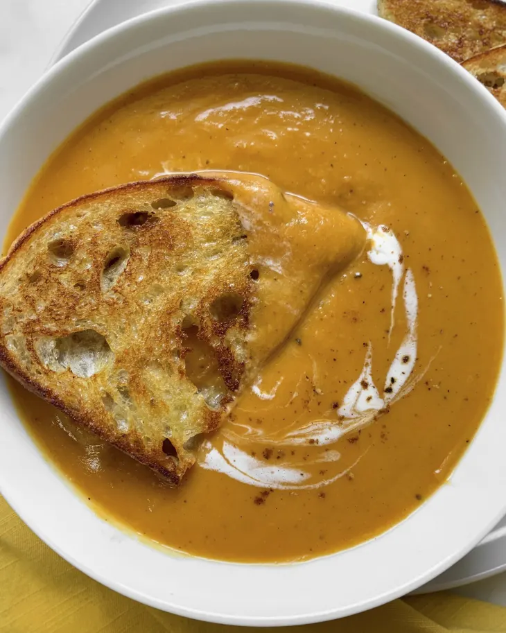

Sweet potato soup

Description
Ingredients
- 2 pounds sweet potatoes (about 2 large)
- 2 tablespoons plus 1 teaspoon olive oil, divided
- 2 teaspoons kosher salt, divided
- 1 teaspoon freshly ground black pepper, divided
- 2 tablespoons liquid sweetener, such as maple syrup, honey, or agave nectar1 medium yellow onion
- 6 large cloves garlic
- 1 tablespoon unsalted butter
- Pinch red pepper flakes, plus more as needed (optional)
- 1/2 teaspoon garam masala
- 1/2 cinnamon stick
- 1 (32-ounce) carton low-sodium vegetable or chicken broth (about 4 cups)
- 1/4 cup heavy cream, plus more for serving
- Toasted bread, for serving (optional)
- A bit of love.
How to prepare
- Arrange a rack in the middle of the oven and heat the oven to 425F.
- Halve 2 pounds sweet potatoes lengthwise and place on a rimmed baking sheet. Drizzle with 4 teaspoons of the olive oil and season with 1/2 teaspoon of the kosher salt, and 1/4 teaspoon of the black pepper. Toss to coat, then arrange in a single layer cut-side down.
- Roast until the potatoes are fork tender, 25 to 35 minutes. Meanwhile, cook the aromatics. Thinly slice 1 medium yellow onion (about 2 cups). Finely chop 6 large garlic cloves (about 2 tablespoons). Peel and finely grate 1 (4-inch) piece fresh ginger until you have 2 tablespoons.
- Heat the remaining 1 tablespoon of olive oil and 1 tablespoon unsalted butter in a large Dutch oven or pot over medium heat until the butter is melted. Add the onion, 1 teaspoon of the kosher salt, and 1/2 teaspoon black pepper. Cook, stirring often, until softened, 5 to 8 minutes. Add the garlic, ginger, a pinch of red pepper flakes if using, and 1/2 teaspoon garam masala. Cook, stirring constantly, until fragrant and the garam masala is slightly toasted, about 2 minutes more. Remove the pot from the heat.
- Use a spoon to scoop the flesh of the sweet potatoes into the pot; discard the skins. Add 1/2 cinnamon stick, 1 (32-ounce) carton low-sodium vegetable or chicken broth, the remaining 1/2 teaspoon kosher salt, and remaining 1/4 teaspoon black pepper. Stir to combine and bring to a boil over high heat. Reduce the heat to maintain a simmer, cover, and cook until the sweet potatoes and aromatics are very soft and the flavors meld, 15 to 20 minutes.
- Remove the pot from the heat.. Remove and discard the cinnamon stick. Add 1/4 cup heavy cream and stir to combine. Working in batches as needed, transfer the soup to a blender and blend until smooth and creamy, 2 to 4 minutes per batch. Transfer the blended soup back to the pot. (Alternatively, blend directly in the pot with an immersion blender.) Rewarm the soup over medium-low heat if needed. Serve topped with a drizzle of heavy cream and toasted bread on the side if desired.
Storage
**Leftovers can be refrigerated in an airtight container for up to 5 days. Thin out with more broth if needed when reheating.**
Back to Home Page